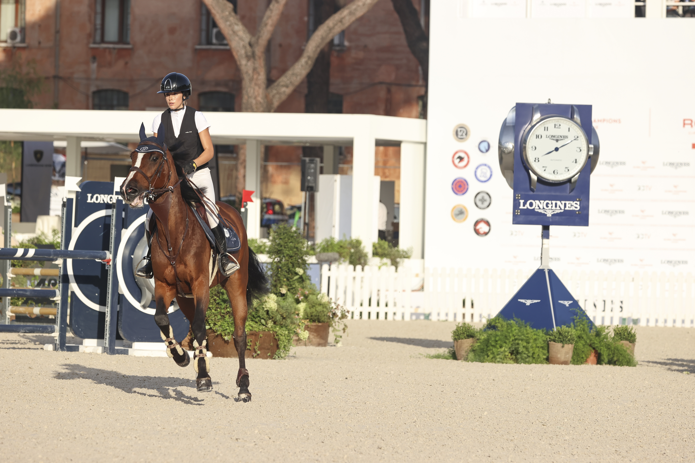

Estrena 'FAULTLESS', docuserie sobre los mejores jinetes de salto del mundo
La serie de seis episodios, narrada por Walton Goggins y producida en colaboración con Rolex, sigue a 14 jinetes de élite mundial durante la temporada 2025, incluidos los eventos del Rolex Grand Slam.

Uso editorial
El próximo 23 de junio se estrenará en Estados Unidos y Canadá FAULTLESS, una docuserie que adentra al espectador en el universo del salto de obstáculos de máximo nivel. Con seis episodios producidos en colaboración con Rolex y narrados por el actor Walton Goggins (tres veces nominado al Emmy), la serie captura la precisión, el vínculo y el rendimiento que definen a este deporte.
FAULTLESS documenta la temporada 2025 siguiendo a 14 de los mejores jinetes del mundo en competiciones celebradas en Francia, Alemania, Países Bajos, Suiza, Inglaterra, Irlanda, Estados Unidos y Canadá, incluyendo las pruebas del prestigioso Rolex Grand Slam de Salto.
Entre los protagonistas destacan varios embajadores de Rolex: Richard Vogel, actual campeón de Europa y número 2 del ránking mundial, considerado una de las estrellas emergentes del circuito junto a su excepcional caballo United Touch S; Steve Guerdat y Martin Fuchs, ambos ganadores de Majors con distinguidas carreras internacionales que aportan perspectiva sobre la vida en la cúspide del deporte; y Sophie Hinners, uno de los talentos más brillantes de la nueva generación, con presencia constante en el top-10 de los Majors más recientes.
La serie también sigue de cerca a la amazona olímpica canadiense Tiffany Foster y a la estadounidense Lillie Keenan, ambas con notables actuaciones en campeonatos y escenarios de primer nivel.
"El salto se decide en segundos, pero lo que rara vez se ve son los años de preparación, confianza y sacrificio detrás de cada recorrido", señaló Ben Asselin, productor ejecutivo de Brighter Frame Productions. "Con FAULTLESS quisimos acercar al público al mundo ecuestre: la presión, las alianzas y los extraordinarios atletas, humanos y equinos, que definen el deporte en su nivel más alto."
Tom Forman, CEO de Terminal B TV, añadió: "Los atletas a los que seguimos durante más de un año son algunos de los más intrépidos, determinados e interesantes que he cubierto en mi carrera. Aunque su mundo puede parecer exclusivo e incluso intimidante, sus luchas e historias son tremendamente cercanas e inspiradoras."
La docuserie está producida por Brighter Frame Productions, Terminal B TV y Spruce Meadows, en colaboración con Rolex. Ver el tráiler oficial.
— Redacción de Hípica al Día